01
Hayal Bahçe
Geniş yeşil alanda açık hava davetleri
Gölge, göl kenarı ve nikah düzeniyle büyük davet akışını rahat taşıyan ferah bahçe.
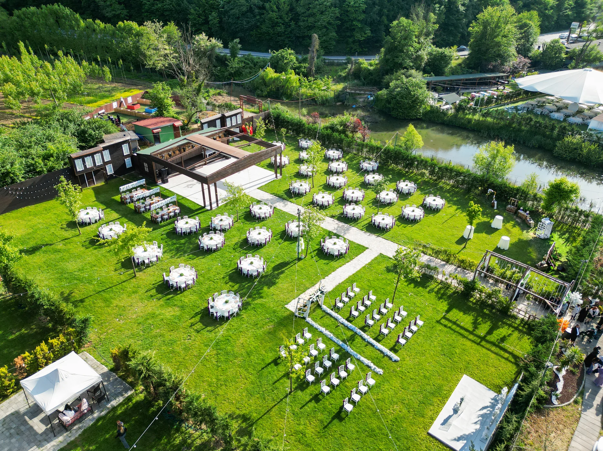
01
Geniş yeşil alanda açık hava davetleri
Gölge, göl kenarı ve nikah düzeniyle büyük davet akışını rahat taşıyan ferah bahçe.
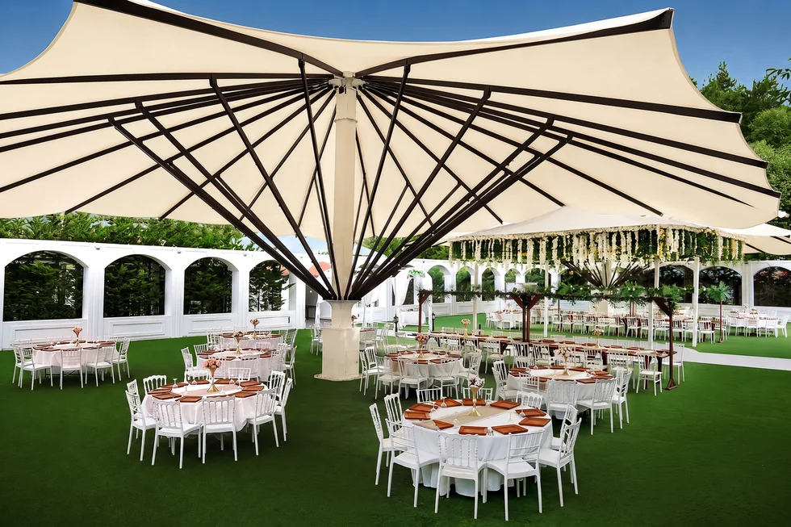
02
Beyaz kemerler ve büyük şemsiyeler
Klasik, aydınlık ve düzenli masa yerleşimiyle kalabalık kır düğünleri için güçlü atmosfer.
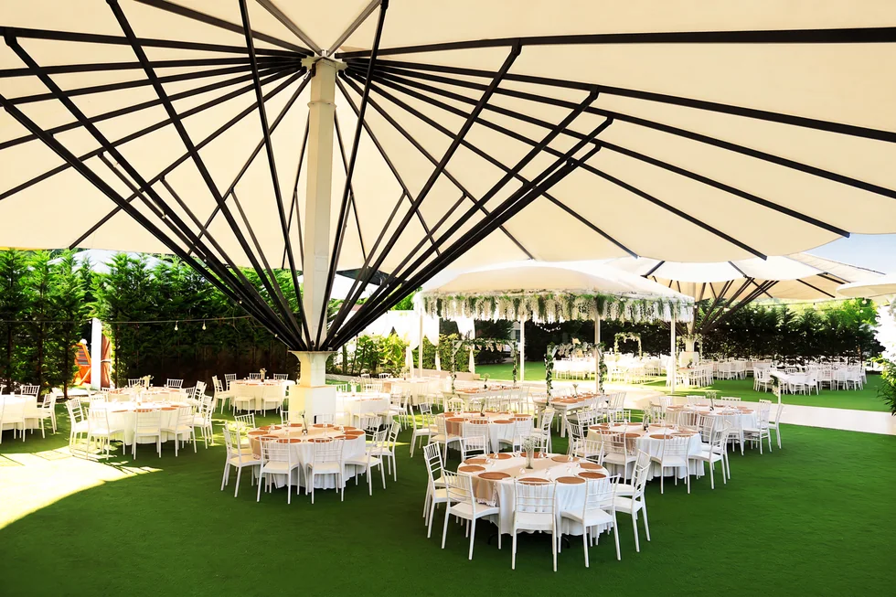
03
Romantik, korunaklı ve davetkar
Sıcak gün ışığı, yeşil doku ve süslemeli alanlarıyla masalsı bir kutlama hissi.
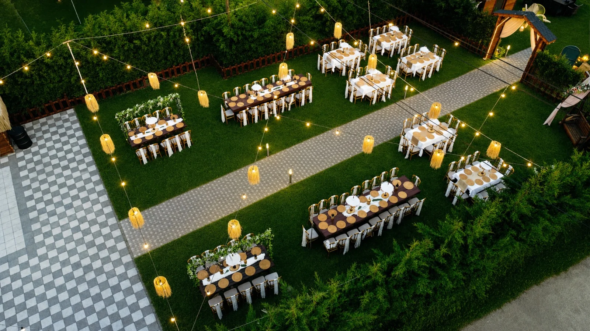
04
Bohem ışıklar ve özel masa düzeni
Sıcak aydınlatma, ahşap masalar ve altın sandalye detaylarıyla samimi davet atmosferi.
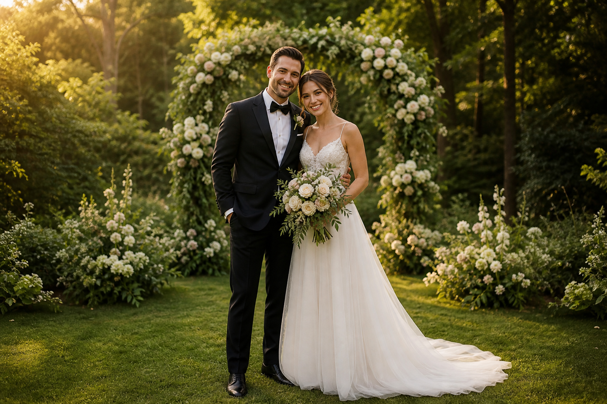
ClassicFotoğraf Paketi
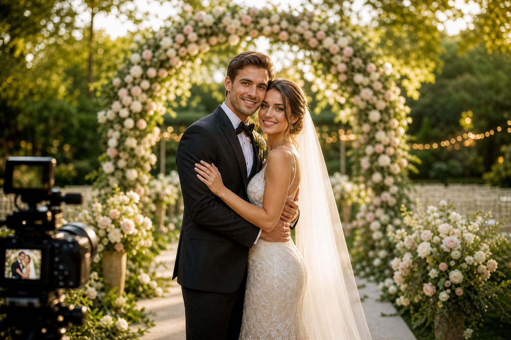
GoldFotoğraf Paketi
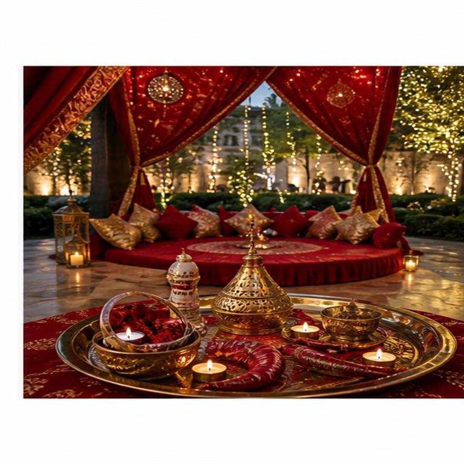
Kına PaketiKına Paketi
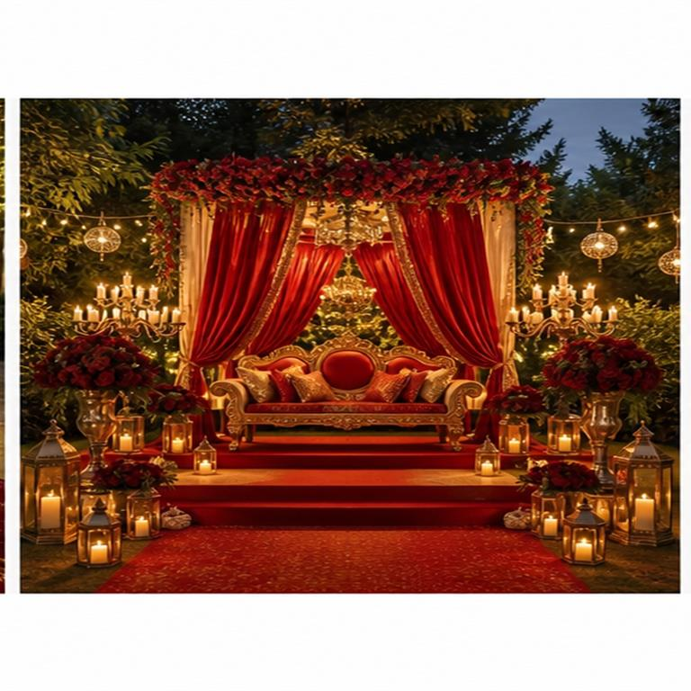
VİP PaketKına Paketi
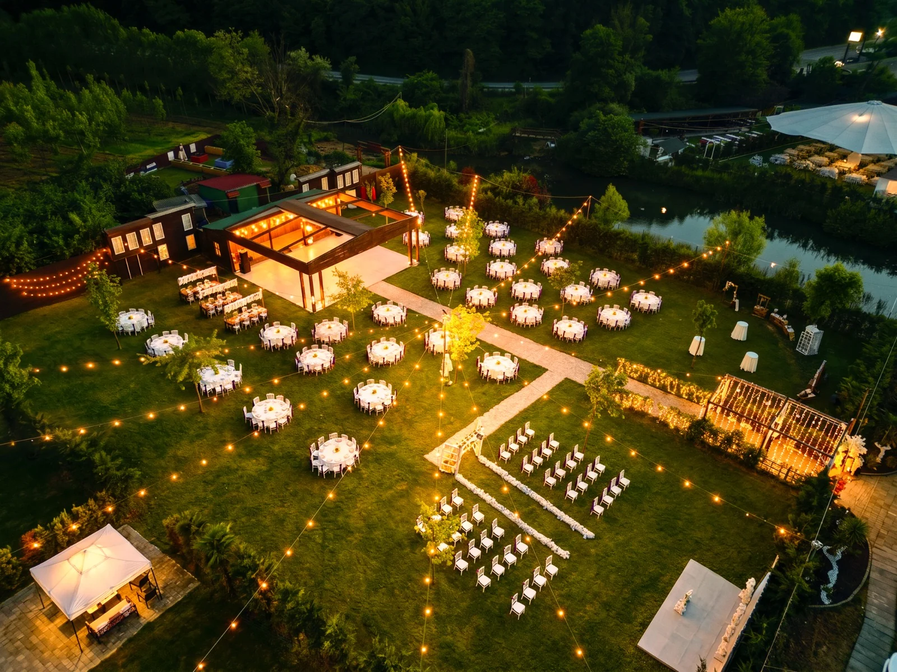
Doğanın içinde, zarif masa düzeni ve güçlü organizasyon akışıyla unutulmaz kır düğünleri.
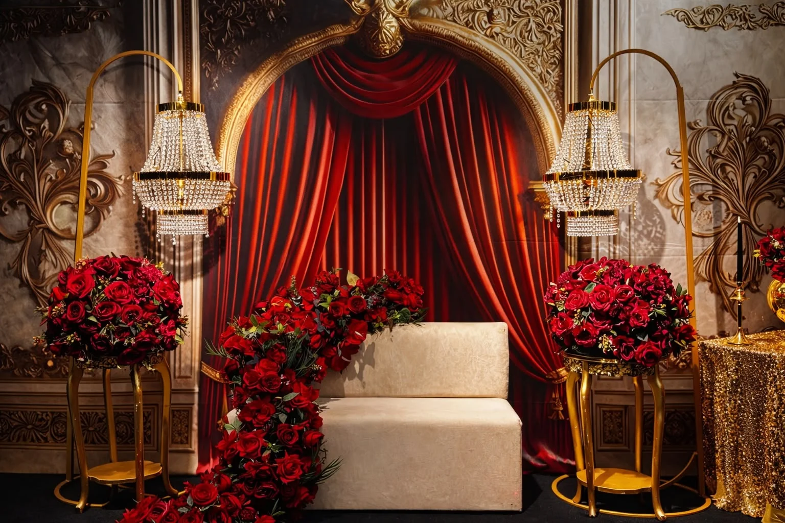
Işık, müzik ve geleneksel dokuyu sıcak bir bahçe atmosferiyle buluşturan kına geceleri.
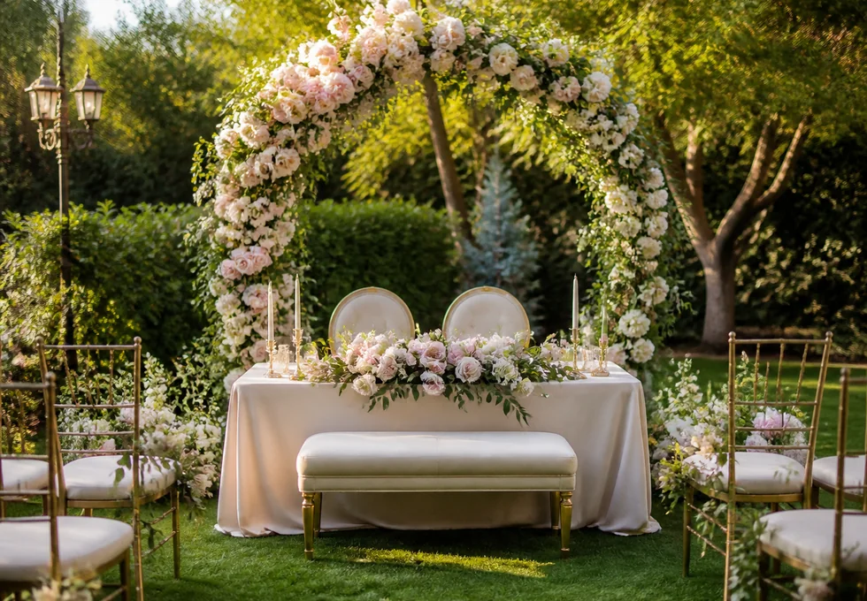
Romantik süslemeler, şık karşılama ve fotoğraf değeri yüksek nişan davetleri.
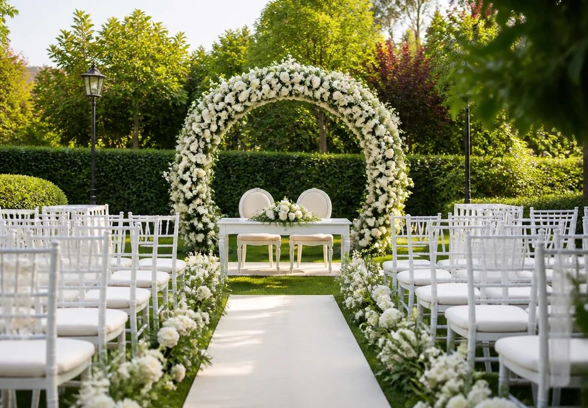
Yeşil alan, nikah yolu ve zarif seremoni düzeninin bir arada olduğu açık hava törenleri.
Değerlendirmeler
Puan ve yorum sayısı Google Haritalar'dan günlük çekilir. Çiftlerin kendi deneyimlerinden kısa notlar.
Yorumları Google'da gör →Ece & Kaan
★★★★★
Hayal Bahçe
Salonun yeşil alanı, nikah yolu ve masa düzeni tam hayal ettiğimiz gibiydi. Misafirlerimiz mekanın ferahlığını çok beğendi.
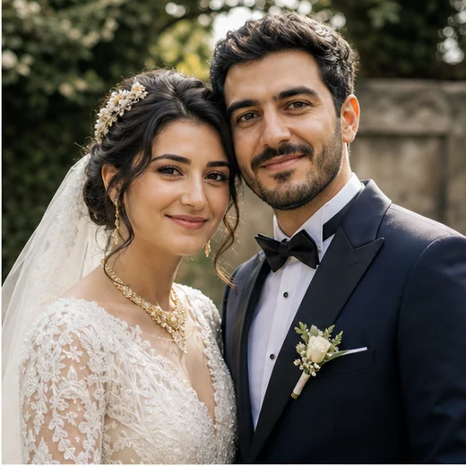
Derya & Mert
★★★★★
Kale Bahçe
Kale Bahçe'nin beyaz dokusu ve aydınlık atmosferi fotoğraflarda harika durdu. Organizasyon boyunca her şey çok düzenliydi.
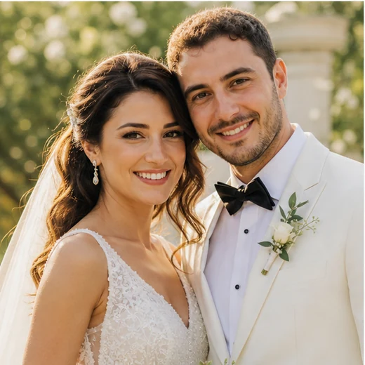
Naz & Can
★★★★★
Masal Bahçe
Masal Bahçe gerçekten adının hakkını veriyor. Hem romantik hem de misafirlerin rahat ettiği çok sıcak bir alan.
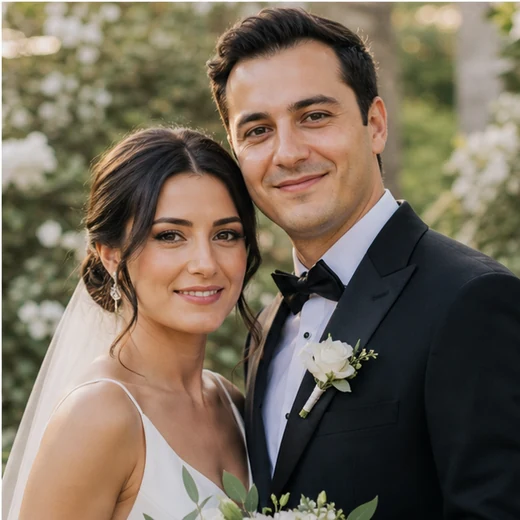
Selin & Burak
★★★★★
Rüya Bahçe
Işıklar, masa düzeni ve doğal ortam sayesinde gece boyunca çok özel bir atmosfer oluştu. Herkesten güzel yorum aldık.
Kale Bahçe ve Masal Bahçe'de, bahçelerin toplam kapasitesini koruyabilecek büyüklükte dev şemsiyelerimiz bulunmaktadır. Hayal Bahçe'de ise her masanın üzerine gazebo şemsiye kurulumu yapılarak misafirlerimiz yağmurdan korunmaktadır.
Evet. Tesisimizde 500 araç kapasiteli açık otopark bulunmaktadır.
Paketlerimiz; mekân kullanımı, masa ve sandalye düzeni, konsept süsleme, ikramlıklar ve organizasyon hizmetlerini kapsamaktadır. Paket içerikleri, çiftlerimizin ihtiyaçlarına göre özel olarak hazırlanabilmektedir.
Evet. Düğün gününüzde, programın başından sonuna kadar size eşlik edecek bir gelin-damat asistanınız bulunmaktadır.
Tesisimizde dört farklı konsepte sahip bahçe bulunmaktadır. Bu bahçelerde 50 kişiden 1.500 kişiye kadar farklı kapasitelere uygun organizasyonlar düzenleyebilmekteyiz.
İletişim
Detaylı bilgi ve rezervasyon talepleriniz için bizimle WhatsApp üzerinden iletişime geçebilirsiniz.